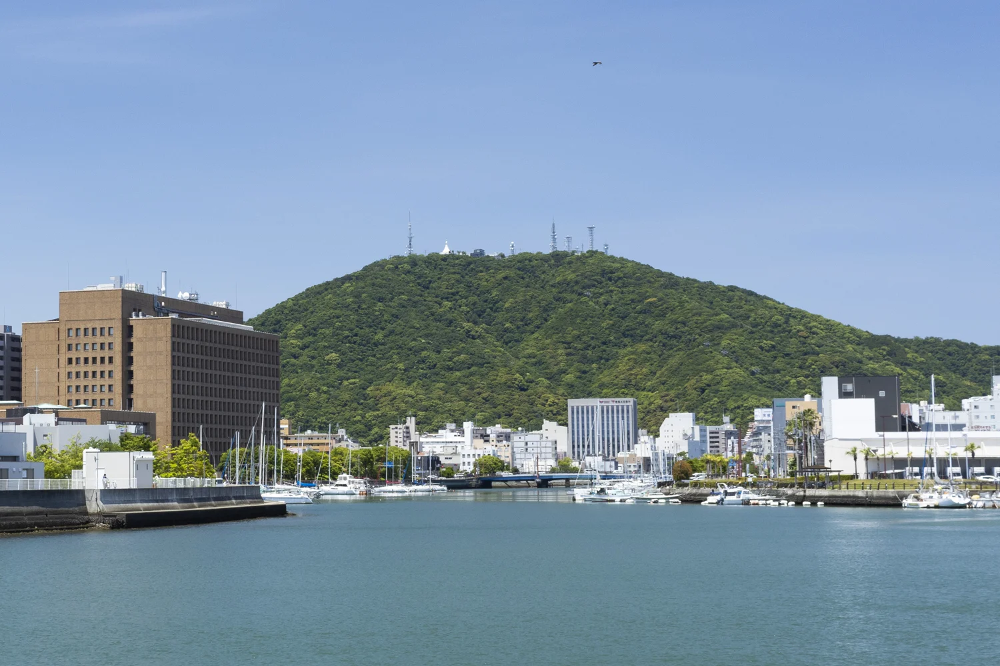
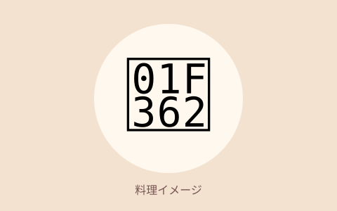
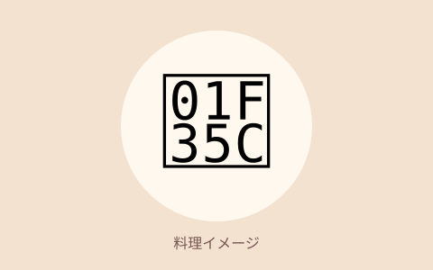
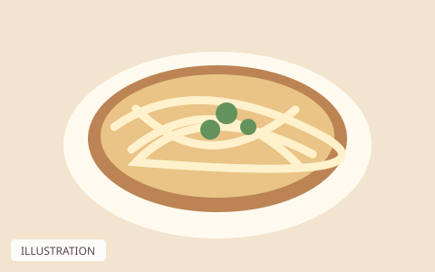
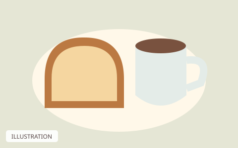

阿波尾鶏（あわおどり）
徳島のブランド地鶏。適度な歯ごたえと濃いうま味。炭火焼きや焼き鳥で。

地図にピンがないスポットは、カードの「経路案内」へ
懇親会から公演へ移動する方は早めに退席。車の返却場所・時刻は未確認。飲酒後は運転しないでください。
乗り場：徳島市南内町2丁目地先、新町川水際公園ボートハウス前（両国橋北詰）。徳島駅から徒歩約10分。
阿波おどり会館：徳島市新町橋2丁目20。
新町川と助任川に囲まれた中心市街地を水上から巡ります。1990年に市民有志が結成した新町川を守る会は、河川清掃から周遊船運航、緑化、地域づくりへ活動を広げてきました。市民主体の水辺再生を体感できる場所です。
夜便：17:00 / 17:40 / 18:20 / 19:00 / 19:40
昼便：11:00 / 11:40 / 12:20 / 13:00 / 13:40 / 14:20 / 15:00 / 15:40
約30分。夜便 大人1,000円・中学生800円・小学生以下500円。昼便 大人800円・中学生600円・小学生以下400円。
原則予約不要。12名以上は要事前問い合わせ。天候による変更・中止あり。防寒着推奨。
運航問い合わせ 090-3783-2084運航公式サイト1999年開館。阿波おどりの保存・伝承と通年観光を目的とした文化拠点です。夜は有名連が日替わりで出演します。
代表的な流派「阿呆調」を受け継ぐ有名連。破れ笠の意匠、豪快な提灯の男踊り、差し足の女踊り、独自の奴踊りが見どころです。
徳島市公式・11月の出演予定（出演変更の可能性あり）
夜公演 20:00〜20:50。有名連による実演。大人1,600円、小・中学生800円。
当日の公演・空席・チケット購入方法は公式サイトでご確認ください。
会館公式サイト懇親会や自由行動で楽しんでほしい、徳島ならではの味。食べログの口コミ・選出歴と夜の営業時間を参考に選んだ候補です。
徳島のブランド地鶏。適度な歯ごたえと濃いうま味。炭火焼きや焼き鳥で。
祖谷地方に伝わる郷土料理。そばの実を鶏肉や野菜と煮込んだ汁物。
なると金時を食べて育つ徳島のブランド豚。
茶系・白系・黄系があり、甘辛い豚バラ肉と生卵を合わせる茶系は代表的な一杯。夜の締めにも。
徳島ラーメン公式ガイド
郷土料理
阿波尾鶏・そば米汁・地魚。
17:00〜23:00｜食べログ3.51
骨付き阿波尾鶏・そば米汁。
17:00〜22:30｜百名店2023
焼き鳥 WEST 百名店選出。
18:00〜23:00
阿波金時豚・阿波尾鶏・阿波牛。

10:00〜24:00
駅前の定番徳島ラーメン。
11:00〜翌4:00
濃厚豚骨醤油と生卵。
金曜19:00〜翌3:00
両国橋の人気店。すだちで味変。
各自の好みに合わせて自由に選べる3店舗。
県産食材の朝定食。7:30〜9:30（朝食）。基本の朝食600円〜、朝定食1,300円〜（公式）。
寺島本町東1-20 鉄屋ビル2・3階

イメージイラスト（店舗の写真はリンク先へ）地元おすすめ：朝定食
朝7:00開店。徳島駅から徒歩約2分。朝はうどんとおにぎり、おかずを組み合わせた朝定食がおすすめ。最新の内容・価格・提供時間は店頭でご確認ください。
寺島本町東3-12-7

イメージイラスト（店舗の写真はリンク先へ）7:30開店。天然酵母パンと旬の県産食材。最新の朝食価格は店頭確認。
東船場町1-26
土曜は通常営業日ですが、臨時休業は未確認です。
11月28日（土）・29日（日）に徳島市内で開かれる催し。中心街で回るなら、日曜のとくしまマルシェと阿呆フェスは会場が近く、同じ日に立ち寄りやすいです。
11/28（土）・29（日）
おきのすインドアパーク
土曜10:00〜17:00、日曜10:00〜16:00。花の展示や生け花の企画があり、入場無料です。
11/29（日）9:00〜14:00
しんまちボードウォーク周辺
今回は「美馬市フェア＆シーフードフェア」です。
11/29（日）10:00〜17:00
東新町2丁目商店街・両国橋西公園など
阿波おどりのステージ、藍染体験、まち歩きがあり、参加無料・事前申込不要です。
11/29（日）
文化の森 徳島県立二十一世紀館イベントホール
日豪交流と新演目をテーマにした公演です。
11月28日（土）・29日（日）に神山町で開かれる催し。
両日開催 Nice to Meet You KAMIYAMA Vol.2（要申込）